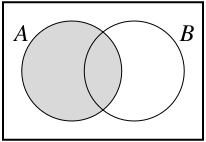
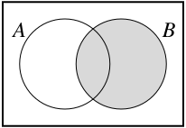
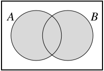
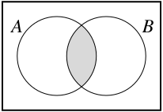
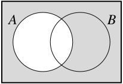
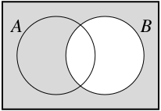

Dalam matematika, kumpulan titik yang membentuk seutas tali atau segumpal plastisin seperti dalam Kegiatan 1.2 direpresentasikan sebagai suatu himpunan. Topologi kemudian mempelajari himpunan-himpunan tersebut serta sifat-sifat yang tidak berubah ketika suatu transformasi diterapkan padanya. Untuk mempelajari topologi, kita memerlukan pemahaman yang kuat tentang himpunan dan berbagai operasi pada himpunan.
Apa yang kita jumpai dalam Aktivitas Persiapan 1.1 disebut paradoks. Upaya awal kita untuk mendefinisikan himpunan menghasilkan keadaan yang mustahil, karena baik \(S \in S\) maupun \(S \notin S\) menimbulkan kontradiksi. Paradoks ini disebut paradoks Russell, mengambil nama Bertrand Russell, meskipun tampaknya paradoks tersebut telah diketahui sebelum Russell. Pelajaran yang dapat kita ambil adalah bahwa kita harus berhati-hati ketika membuat definisi. Himpunan mungkin tampak sebagai objek yang sederhana, dan dalam pengalaman kita biasanya memang demikian, tetapi mendefinisikan himpunan secara formal dapat menimbulkan masalah. Oleh karena itu, kita tidak akan memberikan definisi formal, melainkan menganggap himpunan sebagai kumpulan objek yang tidak menimbulkan paradoks. Objek-objek tersebut disebut anggota himpunan. (Dalam teori himpunan aksiomatik, himpunan dipandang sebagai konsep primitif yang tidak didefinisikan — sebagaimana titik tidak didefinisikan dalam geometri Euklides.)
Agar dapat bekerja dengan himpunan secara efektif, kita perlu memahami apa artinya dua himpunan sama.
Kegiatan1.3.
(a)
Apa yang dimaksud dengan dua himpunan yang sama? Jika \(A\) dan \(B\) adalah himpunan, bagaimana kita membuktikan bahwa \(A = B\text{?}\) (Pertanyaan ini memerlukan pembahasan, berbeda dengan pertanyaan yang hanya meminta perhitungan atau contoh. Aktivitas di sepanjang buku ini akan memuat kedua jenis pertanyaan tersebut.)
(b)
Misalkan \(A = \{x \in \R \mid x \lt 2\}\) dan \(B = \{x \in \R \mid x-1 \lt 1\}\text{.}\) Apakah \(A=B\text{?}\) Jika ya, buktikan jawaban Anda. Jika tidak, buktikan setiap inklusi yang berlaku.
(c)
Misalkan \(A = \{n \in \Z \mid 2 \text{ membagi } n\}\) dan \(B = \{n \in \Z \mid 4 \text{ membagi } (n-2)\}\text{.}\) Apakah \(A=B\text{?}\) Jika ya, buktikan jawaban Anda. Jika tidak, buktikan setiap inklusi yang berlaku.
(d)
Misalkan \(A = \{n \in \Z \mid n \text{ ganjil } \}\) dan \(B = \{n \in \Z \mid 4 \text{ membagi } (n-1) \text{ atau } 4 \text{ membagi } (n-3)\}\text{.}\) Apakah \(A=B\text{?}\) Jika ya, buktikan jawaban Anda. Jika tidak, buktikan setiap inklusi yang berlaku.
Setelah memiliki gagasan tentang himpunan, kita dapat membentuk himpunan baru dari himpunan yang sudah ada. Sebagai contoh, kita mendefinisikan gabungan, irisan, selisih himpunan, dan komplemen sebagai berikut.
Gabungan himpunan \(A\) dan \(B\) adalah himpunan \(A \cup B\) yang didefinisikan sebagai
\begin{equation*}
A \cup B = \{x \mid x \in A \text{ atau } x \in B\}\text{.}
\end{equation*}
Irisan himpunan \(A\) dan \(B\) adalah himpunan \(A \cap B\) yang didefinisikan sebagai
\begin{equation*}
A \cap B = \{x \mid x \in A \text{ dan } x \in B\}\text{.}
\end{equation*}
Misalkan \(A\) dan \(B\) adalah himpunan. Selisih himpunan \(A \setminus B\) adalah himpunan
\begin{equation*}
A \setminus B = \{a \in A \mid a \notin B\}\text{.}
\end{equation*}
Misalkan \(A\) merupakan himpunan bagian dari suatu himpunan \(U\text{.}\) Komplemen \(A\) di dalam \(U\) adalah himpunan
\begin{equation*}
U \setminus A = \{x \in U \mid x \notin A\}\text{.}
\end{equation*}
Komplemen himpunan \(A\) di dalam himpunan \(U\) juga dinyatakan dengan \(C_U(A)\text{,}\)\(C(A)\) (jika himpunan \(U\) sudah dipahami dari konteks), \(A^c\text{,}\) atau bahkan \(U-A\text{.}\)
Kita dapat memvisualisasikan himpunan-himpunan ini dengan diagram Venn. Diagram Venn menggambarkan himpunan menggunakan bangun-bangun geometri. Sebagai contoh, jika \(U\) adalah himpunan yang memuat semua himpunan lain yang sedang diperhatikan (kita menyebut \(U\) sebagai himpunan semesta), kita dapat merepresentasikan \(U\) sebagai wadah besar (misalnya persegi panjang), dengan himpunan bagian \(A\) dan \(B\) sebagai wadah yang lebih kecil (misalnya lingkaran), lalu mengarsir anggota-anggota suatu himpunan tertentu. Diagram Venn dalam Gambar 1.2 menggambarkan himpunan \(A\text{,}\)\(B\text{,}\)\(A \cup B\text{,}\)\(A \cap B\text{,}\)\(A^c\text{,}\) dan \(B^c\text{.}\)



\begin{equation*}
A
\end{equation*}
\begin{equation*}
B
\end{equation*}
\begin{equation*}
A \cup B
\end{equation*}



\begin{equation*}
A \cap B
\end{equation*}
\begin{equation*}
A^{c}
\end{equation*}
\begin{equation*}
B^{c}
\end{equation*}
Gambar1.2.Diagram Venn
Seperti yang telah kita bahas, untuk membuktikan bahwa dua himpunan \(X\) dan \(Y\) sama, kita membuktikan bahwa masing-masing merupakan himpunan bagian dari yang lain. Contoh berikut memberikan ilustrasi lain dari gagasan tersebut.
Contoh1.3.
Misalkan \(A\text{,}\)\(B\text{,}\) dan \(C\) adalah himpunan. Kita akan membuktikan bahwa \(A \cap (B \setminus C) = (A \cap B) \setminus (A \cap C)\text{.}\)
Untuk membuktikan kesamaan himpunan ini, kita harus membuktikan bahwa \(A \cap (B \setminus C) \subseteq (A \cap B) \setminus (A \cap C)\) dan \((A \cap B) \setminus (A \cap C) \subseteq A \cap (B \setminus C)\text{.}\) Kita mulai dengan \(A \cap (B \setminus C) \subseteq (A \cap B) \setminus (A \cap C)\text{.}\)
Untuk membuktikan bahwa \(A \cap (B \setminus C) \subseteq (A \cap B) \setminus (A \cap C)\text{,}\) kita perlu menunjukkan bahwa setiap anggota \(A \cap (B \setminus C)\) juga merupakan anggota \((A \cap B) \setminus (A \cap C)\text{.}\) Untuk itu, kita pilih sembarang anggota dari \(A \cap (B \setminus C)\) dan menunjukkan bahwa anggota tersebut berada dalam \((A \cap B) \setminus (A \cap C)\text{.}\) Misalkan \(x \in A \cap (B \setminus C)\text{.}\) Maka \(x \in A\) dan \(x \in B \setminus C\text{.}\) Fakta bahwa \(x \in B \setminus C\) berarti bahwa \(x \in B\text{,}\) tetapi \(x \notin C\text{.}\) Oleh karena itu, \(x \in A\) dan \(x \in B\text{,}\) tetapi \(x \notin C\text{.}\) Ini berarti bahwa \(x \in A\) dan \(x \in B\text{,}\) sedangkan \(x \in A\) dan \(x \notin C\text{.}\) Jadi, \(x \in A\) dan \(x \in B\text{,}\) tetapi \(x \notin A \cap C\text{.}\) Kita menyimpulkan bahwa \(x \in (A \cap B) \setminus (A \cap C)\text{.}\) Hal ini membuktikan bahwa \(A \cap (B \setminus C) \subseteq (A \cap B) \setminus (A \cap C)\text{.}\)
Untuk inklusi sebaliknya, misalkan \(y \in (A \cap B) \setminus (A \cap C)\text{.}\) Jadi, \(y \in A \cap B\text{,}\) tetapi \(y \notin A \cap C\text{.}\) Karena \(y \in A \cap B\text{,}\) kita mengetahui bahwa \(y \in A\) dan \(y \in B\text{.}\) Fakta bahwa \(y \notin A \cap C\text{,}\) bersama dengan keanggotaan yang telah disebutkan, berarti bahwa \(y \notin C\text{.}\) Jadi, \(y \in A\text{,}\)\(y \in B\text{,}\) dan \(y \notin C\text{.}\) Dengan demikian, \(y \in A\) dan \(y \in B \setminus C\text{.}\) Kita menyimpulkan bahwa \(y \in A \cap (B \setminus C)\text{,}\) yang menunjukkan bahwa \((A \cap B) \setminus (A \cap C) \subseteq A \cap (B \setminus C)\text{.}\) Kedua inklusi, \(A \cap (B \setminus C) \subseteq (A \cap B) \setminus (A \cap C)\) dan \((A \cap B) \setminus (A \cap C) \subseteq A \cap (B \setminus C)\text{,}\) menunjukkan bahwa \(A \cap (B \setminus C) = (A \cap B) \setminus (A \cap C)\text{.}\)
Kita akan menggunakan gagasan dalam Kegiatan 1.3 dan Contoh 1.3 untuk membuktikan kesamaan himpunan di sepanjang buku ini. Aktivitas berikut memberikan latihan tambahan.
Kegiatan1.4.
Dalam aktivitas ini, kita bekerja dengan gabungan, irisan, dan komplemen himpunan. Misalkan \(A\) dan \(B\) adalah himpunan.
(a)
Misalkan \(A = \{1,2,3,4,5,6\}\) dan \(B = \{2,4,6,8,10\}\text{,}\) dengan \(U = \{1,2,3,4,5,6,7,8,9,10\}\text{.}\)
(i)
Tentukan anggota \(A \cup B\) dan \(A \cap B\text{.}\) Apa saja anggota \((A \cup B)^c\) dan \((A \cap B)^c\text{?}\)
(ii)
Tentukan anggota \(A^{c} \cup B^{c}\) dan \(A^{c} \cap B^{c}\text{.}\)
(b)
Misalkan \(A\) dan \(B\) merupakan sembarang himpunan bagian dari suatu himpunan semesta \(U\text{.}\) Terdapat hubungan antara \(A\text{,}\)\(B\text{,}\) komplemen keduanya, gabungan, dan irisan.
(i)
Gunakan diagram Venn untuk menggambar \((A \cup B)^c\) dan \((A \cap B)^c\text{.}\)
(ii)
Gunakan diagram Venn dan hasil pada bagian (a) untuk menemukan serta membuktikan hubungan antara \(A^c\text{,}\)\(B^c\text{,}\) dan \((A \cup B)^c\text{.}\)
(iii)
Gunakan diagram Venn dan hasil pada bagian (a) untuk menemukan serta membuktikan hubungan antara \(A^c\text{,}\)\(B^c\text{,}\) dan \((A \cap B)^c\text{.}\)
Dalam Kegiatan 1.4 kita bekerja dengan gabungan dan irisan dua himpunan. Tidak ada alasan untuk membatasi definisi ini hanya pada dua himpunan, seperti yang ditunjukkan oleh aktivitas berikut.
Kegiatan1.5.
Untuk mendefinisikan kumpulan himpunan tak hingga, kita sering menggunakan apa yang disebut himpunan indeks. Himpunan indeks memungkinkan kita mempertimbangkan kumpulan objek yang berkorespondensi satu-satu dengan himpunan seperti bilangan bulat positif, atau bahkan bilangan real. Ketika menggunakan himpunan indeks, biasanya kita membuat pernyataan seperti “misalkan \(\{A_{\alpha}\}\text{,}\) untuk \(\alpha \in I\text{,}\) adalah kumpulan himpunan yang diindeks oleh suatu himpunan \(I\)”. Kumpulan \(\{A_{\alpha}\}_{\alpha \in I}\) disebut keluarga himpunan berindeks.
(a)
Himpunan \(I\) dapat berhingga. Sebagai contoh, misalkan \(A_{n} = \{1, 2, 3, \ldots n\}\) untuk \(n\) dalam himpunan \(I = \{1,2,3, \ldots, 10\}\text{.}\)
Ada berapa himpunan dalam keluarga berindeks \(\{A_n\}_{n \in I}\text{?}\)
(b)
Himpunan indeks juga dapat tak hingga. Sebagai contoh, misalkan \(A_{\alpha} = [0, |\alpha|)\) untuk \(\alpha\) dalam himpunan \(\R\) (dengan \([a,b)\) menyatakan interval yang terdiri atas bilangan real \(x\) sedemikian sehingga \(a \leq x \lt b\)). Dalam hal ini, tentukan \(A_5\text{.}\) Tentukan \(A_{\pi}\text{.}\) Tentukan \(A_{-\frac{2}{3}}\text{.}\)
(c)
Kita telah mendefinisikan gabungan dan irisan dua himpunan. Gagasan yang sama dapat diperluas untuk mendefinisikan gabungan dan irisan suatu kumpulan himpunan berindeks.
(i)
Ingat bahwa jika \(A\) dan \(B\) adalah himpunan, irisan \(A \cap B\) adalah himpunan \(\{x \mid x \in A \text{ dan } x \in B\}\text{.}\) Bagaimana kita dapat memperluas definisi ini dari dua himpunan menjadi sebarang kumpulan himpunan? Dengan kata lain, bagaimana kita mendefinisikan
Dalam contoh pada bagian (b), himpunan apakah \(\ds \bigcap_{\alpha \in \R} A_{\alpha}\) itu?
(ii)
Ingat bahwa jika \(A\) dan \(B\) adalah himpunan, gabungan \(A \cup B\) adalah himpunan \(\{x \mid x \in A \text{ atau } x \in B\}\text{.}\) Bagaimana kita dapat memperluas definisi ini dari dua himpunan menjadi sebarang kumpulan himpunan? Dengan kata lain, bagaimana kita mendefinisikan
Dalam contoh pada bagian (b), himpunan apakah \(\ds \bigcup_{\alpha \in \R} A_{\alpha}\) itu?
Sifat \((A \cap B)^c = A^c \cup B^c\) dan \((A \cup B)^c = A^c \cap B^c\) yang kita pelajari dalam Kegiatan 1.4 disebut Hukum De Morgan. Hukum ini berlaku untuk sebarang gabungan atau irisan himpunan, baik berhingga maupun tak hingga. Pembuktiannya diserahkan kepada Latihan 4.
Teorema1.4.Hukum De Morgan.
Misalkan \(\{A_{\alpha}\}\) adalah kumpulan himpunan yang diindeks oleh suatu himpunan \(I\) di dalam himpunan semesta \(U\text{.}\) Maka
Verifikasikan Hukum De Morgan untuk kasus khusus \(A_{\alpha} = \{1, 2, 3, \ldots \alpha\}\) di dalam \(U = \Z\text{,}\) dengan \(\alpha\) sebarang anggota himpunan indeks \(I = \Z^+\text{.}\)
(b)
Mengapa komplemen suatu gabungan seharusnya berupa irisan, dan mengapa komplemen suatu irisan seharusnya berupa gabungan?